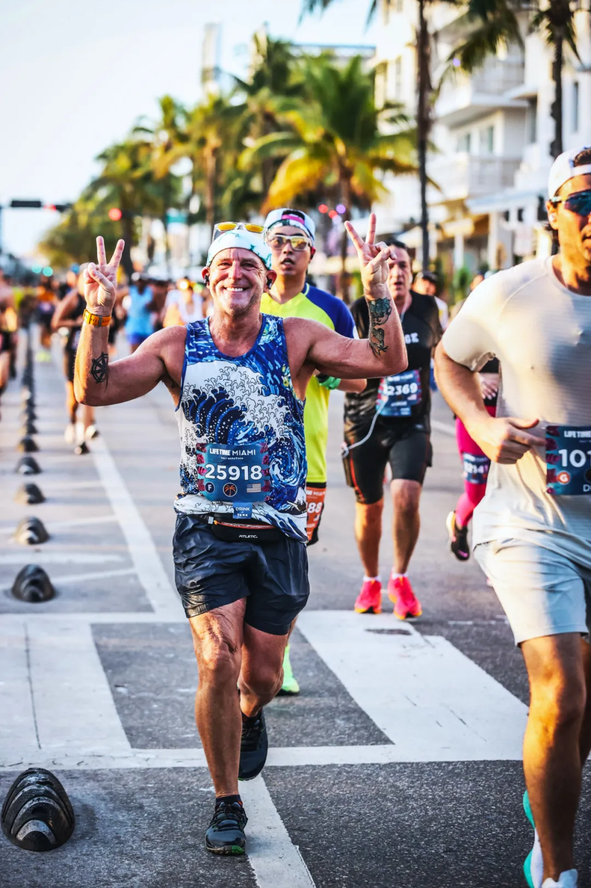
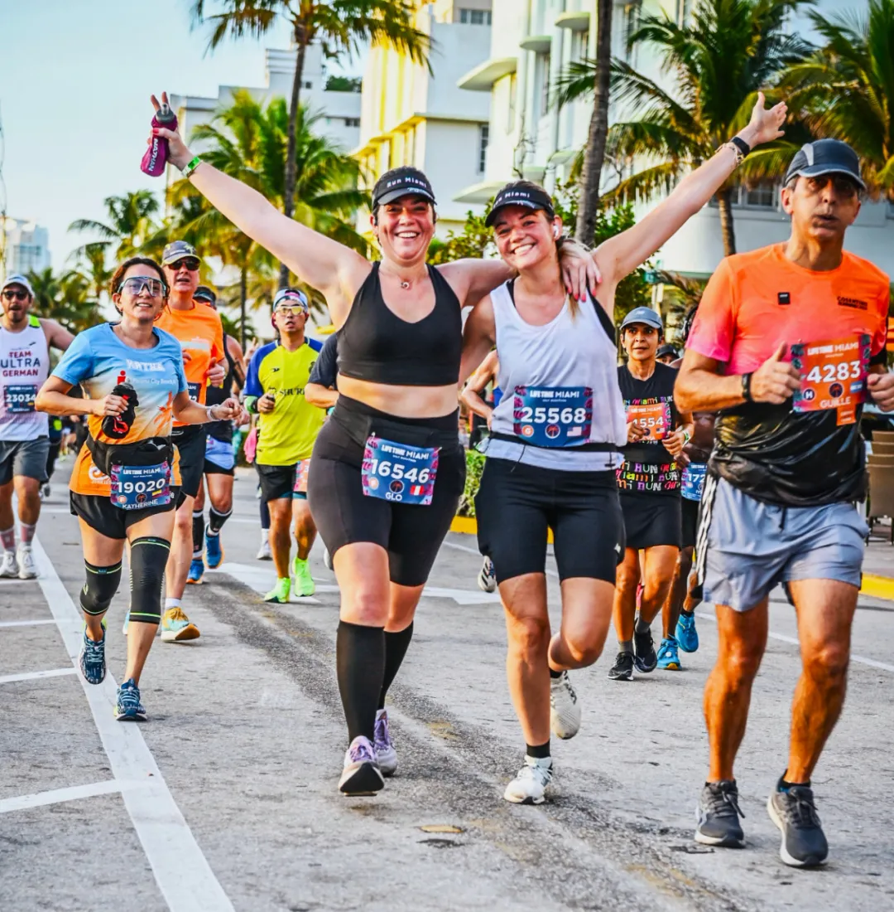

前言
再刷佛州：一张机票引发的迈阿密马拉松
🌴 迈阿密, 佛罗里达

佛罗里达，第十五州，本来已经打卡过了。迪士尼马拉松刚跑完，旅程本该就此收尾。
但那张“买错日期的机票”，带我们又来了这片阳光地带。上回是迪士尼马拉松，这次是迈阿密。
原来老天自有安排，Siqi能补上她因雨缩水的迪士尼半马，我也顺便“再刷”一次第十五州全马。


迈阿密，一座把加勒比、拉丁和美式梦搅在一起的城市。有棕榈树、有粉色的日出，有从小哈瓦那飘来的古巴音乐，有南海滩的日光派对，也有梅西的新主场：迈阿密国际。这是NBA热火的地盘，也是游轮驶向世界的港口。
周五晚上落地，周日清晨开跑，从市中心到Bayside港湾，跑进南海滩，看海风扫过高楼与旗帜，纯纯特种兵行程，我们没打算走回头路，但有些弯路，原来也通向风景。
第一章｜Little Havana 奇妙夜
🛫 迈阿密, 佛罗里达
周五傍晚，我们落地迈阿密。熟门熟路，搭上彩色双层的Tri-Rail，从劳德代尔堡机场一路南下。阳光透过车窗，是佛州独有的明媚。


这次我们不再只是路过。在Downtown转了一圈，挤上公交，钻进Little Havana边上的一间青年旅舍。不大，但热闹。走廊里能听见西班牙语、英语，还有背包客在阳台做饭。美国很少有这种“旅人味儿”的地方。

晚饭找了家中餐馆，菜单熟得像回家。但第一口就察觉不对劲，味道淡得离谱，每个菜还都盖着一层铁盖子。


我们还以为是墨西哥人开的，后来想想，大概是古巴菜系的“中餐版”。毕竟这里是小哈瓦那，迈阿密的拉丁心脏。
自1959年古巴革命以来，这里成了无数古巴移民的落脚地。他们带来了音乐、雪茄、米饭、自由梦，也可能带走了一点盐。
饭后回旅舍，洗个脸喘口气，刚准备休息，导师的会准时开始了，讨论他项目申请的初稿，隔着几个州和几十度的温差讲研究，也是一种旅途体验。
天上时不时有飞机飞过，院子里还有人在弹吉他，我还真有点担心，被他抓住了周末秘密出行……
那一刻迈阿密不再是阳光沙滩，而是午夜牛马和拉美节奏并存的真实生活。
第二章｜热带节奏，取装备去
📣 迈阿密, 佛罗里达
周六一早，我们搭公交去迈阿密滩那头取装备，目的地是Miami Beach Convention Center，博览会现场就在那儿。
一路上视野颇佳：从车窗扫过Kaseya Center，迈阿密热火的主场，曾经三巨头的战场，如今挂着大字：“HEAT CULTURE”；

再往前，港口边一艘巨大的Carnival邮轮停着，白色船体照着阳光发光，像一块海上的城市。
后来查了下，迈阿密是全世界最大的邮轮港口之一，邮轮比房子还多，大概是因为离加勒比和中美洲都很近，去哪都像度假。


博览会很热闹。跑者来自世界各地，讲着不同的语言，尤其是讲西班牙语的居多，不少拉美裔选手带着家人，小孩跑来跑去，气氛像节日一样。


展厅一角挂着多国国旗，我看到那面熟悉的红旗，赶紧冲上去合了张影；Siqi举着她的号码布，在主背景板前比了个剪刀手。


取完装备，我们在Downtown附近找了家美式自助。干净、健康、还比Hutong便宜。


吃饱后，我们去走了上次错过的Brickell Key（布里克尔小岛）。这个三角小岛连接着市区，但跑马路线不会路过。
傍晚时分，太阳慢慢落下，把高楼剪成剪影，天色从蓝变粉，风吹起来刚刚好。


夜里，我们又坐上公交，回了Little Havana的旅舍。明天要早起，迈阿密马拉松，等着我们。


第三章｜以C罗之名，征服梅西之城
蹦迪起跑线：在拉丁节奏里出发
🎽 迈阿密, 佛罗里达
迈阿密马拉松的赛道是个单圈、平坦、通过美国田协（USTAF）认证的路线，具备波士顿资格赛资质，也就是说，你可以在阳光 and 海风中，跑出一张通往波马的门票，但我还没这个实力。

虽然沿途有几座桥，但都会临时封航固定，没什么陡坡，是那种适合享受、也适合PB的路线，但这天也太热了。全程和半程路线重合一大半，沿线还有音乐、加油者、数字计时钟、志愿者和天光一起醒来。


早上七点，起点设在热火主场 Kaseya Center 外。那座球馆灯光全红，像刚打完季后赛一样热血。起跑前的现场不像比赛，更像一场彩色街头派对：LED灯光、拉丁音乐、跑者的舞步和紧张的心跳一起律动。


也许这正是拉丁人的热情节奏，开赛前就让人想多跳一会儿。我和Siqi在这分别出发，她跑半马，我跑全马。我们在人群中挥了挥手，然后被灯光和节奏推向各自的起点。起跑时天还黑着，但刚跑不到一英里，就登上了连接迈阿密市区和Watson Island的大桥（MacArthur Causeway 起点段）。


天光就在远处铺开，海面从黑夜的墨色变成了晨曦的金橘。邮轮在远方浮动着，像还没睁眼的巨兽。有个女孩站在桥边举着牌子：“Remember your WHY”。剪影像天使，浮在晨雾中。


接着是一段长长的海上公路：MacArthur Causeway。左手是港口，右手是游轮，船体巨得像城市，光线撒在邮轮上，烟囱还冒着轻烟，像是它们也刚醒。


我身边有个穿着梅西10号粉色球衣的人从我身边跑过，粉色的迈阿密国际球衣与这城市的色调配得天衣无缝。跑下Causeway，拐进Miami Beach的时候，天已经完全亮了。阳光直接扑到脸上，热乎乎的，像是从海面蒸腾上来的暖雾。


补给点的水洒在路上，把柏油路反射得像镜面，志愿者的笑容像佛州的阳光一样灿烂。


那一刻，没有谁在赶路，所有人都在享受，跑步不是在对抗时间，而是在迈阿密这座拉丁与海洋交融的城市里，踩着节奏，踩着晨光，把奔跑当作一种呼吸。
粉猪鼓劲段：从Miami Beach跑回市中心
🐷 迈阿密, 佛罗里达
穿过Miami Beach的主街，一路从第4英里跑到第8英里，这段路是整个马拉松中最热闹、也最充满“海岛风情”的部分。


Miami Beach是个细长的岛，有着阳光、沙滩、棕榈树、Art Deco建筑和无数风格迥异的餐馆与精品酒店。而此时我们跑过的是Venetian Causeway，一座由数个小岛（如San Marco、San Marino、Di Lido、Rivo Alto等）串联起来的长桥，一路桥接“Venetian Islands”，两侧是帆船与游艇，像画里一样。


这些小岛被称为“Ter”，其实是“Terrace”的简写，在当地指的就是这种填海造出来的小型住宅岛。这段桥面很有特色，带点老式的铁桥质感，也有点弹腿；桥面上也能看到“Drawbridge Signal”的标志，提示这原本是会开启的桥段，但马拉松期间是临时固定的。晨光洒下来，越来越亮，汗也逐渐止不住，但路边的观众依旧热情。


让我印象最深的是，一群小朋友穿着粉色充气小猪服在路边挥舞“Power Up”的牌子，简直像是从马里奥游戏里走出来的，令人会心一笑。


Miami Beach之后，是朝着Downtown迈阿密回转。穿回市区，人潮明显多了起来，这边的加油观众密度几乎翻倍。这时我们也路过了Miami River，河边的高楼和玻璃幕墙在阳光下变得耀眼。此时太阳完全升起，已经有些炙热了。我们开始往西南方向进发，进入后半程的Brickell区域。温度升高、体力下降、但沿途的支持和城市风景让人一直不舍停下脚步。


热火烤人段：迈阿密马拉松第15至20英里
🌞 迈阿密, 佛罗里达
从第15英里开始，路线突然偏离主线，转向东边，跑进了Rickenbacker Causeway，一段延伸进海的笔直路段。这段路面正在施工，两侧尘土飞扬，没有绿荫、没有遮挡，只有大太阳和水泥地的反光，像一口热锅。

前方就是第16英里的折返点。头顶的太阳已经很毒辣，上午10点的迈阿密阳光毫不留情地铺满了整条路。那一段真的很煎熬，四周的风景也不算太精彩，只有远处的海面和零散的棕榈树陪着我们。

到了Mile 16，我看到立着一个醒目的标志牌，计时器显示我已经跑了三个多小时。这里是个U形的回转点，拐过去的一瞬间，有种喘口气的感觉，尽管空气依旧闷热。

跑回主线之后，路线穿过Steele Mini Park和Kennedy Park，这里虽然是公园，但阳光已经变得越来越猛烈，几乎没有阴凉的地方。

但沿途的观众非常热情，有人从家里拿出水管子，一边笑一边往我们身上喷水，还有骑自行车跟着跑者打气的。


不过说实话，最大的感受还是“热”。那种热，是从脚底板一直烤到太阳穴的热，是那种“如果不走一会儿就要冒烟了”的热。


这个时候，我开始明白为什么迈阿密的球队叫“热火队”，真的是实至名归。我也不和自己硬拼了，开始走走跑跑，给自己降降温。终于，在Coconut Grove Bay Front Park看到20英里的标牌，这里也是全程的折返点。还有不到6英里。

C罗冲线段：迈阿密的最后5英里
🐐 迈阿密, 佛罗里达
进入第21英里后，我们终于开始向东北方向折返，朝着终点 Bayfront Park 奔去。

这段路，阳光依旧猛烈，但心理上却轻松了不少，因为我们知道，终点就在前方，倒数不到10公里。


街区逐渐熟悉，高楼开始映入眼帘，空气中仿佛都多了点终点线的味道。而且这里摄影师特别多，不论是专业长枪大炮，还是志愿者举着手机猛拍。我赶紧整理表情、调整节奏，摆出“哥现在还行”的假象。

补给站依然稳稳在线，志愿者们扛着水枪、端着冰块、扯着嗓子给我们打气，热情得就像这城市的阳光一样铺天盖地。到了第25英里，出现了个小插曲：一个壮汉跑到我身边，拍拍我肩膀，兴奋地喊：“Hey bro, I love Ronaldo too! We’re from the same country!”
原来他是葡萄牙人，看到我穿着C罗在利雅得胜利的球衣，瞬间激动得不行。我们互相比了个大拇指，继续冲向终点。今天我穿这身，就是想在梅西的主场迈阿密，给C罗立立flag。这是我对偶像最街头的致敬方式，不靠进球，只靠迈出每一步。


我继续跑，想着终点线。脚下的影子有点歪，身上的球衣黏着皮肤。但风从海边吹过来，吹得我又清醒了点。终点前最后一英里，我不再思考，只剩脚下的动作。观众越来越密，人声轰得像海浪一样。我看见终点拱门，橘红色的“FINISH”在阳光里有些晃眼。我扬起双臂，像是要飞过去。


冲过终点那一刻，没有嚎啕，只是喘。太阳照得发烫，我接过一块像太阳又像忍者镖的奖牌。


它闪着金光，中心是一棵孤零的椰子树。听说很多人安检被拦，说这东西像武器。一个摄影师举着镜头冲我喊：“Nice shirt, Ronaldo!” “Hell yeah!” 我喊回去。我贴着一瓶冰水在脸上，凉意穿透太阳穴。

我坐在路边，鞋底还烫，浑身还在冒热气。志愿派面包，有人靠着护栏骂了句F word。大家都累，没人装，很真实。


我看了下表，4小时23分。不是最快的，但我还活着。我在迈阿密，在热浪和掌声里，穿着C罗的球衣跑完了26.2英里。这就够了。

赛后在终点草坪上我看到了Siqi，她早就跑完了，状态还不错。我瘫在草地上，热还没散去，身体像个没拔电的电饭煲。舞台上乐队在唱，节奏不慢，我们也跟着蹦了几下，腿酸，但人轻快。我拿出早上穿过的C罗球衣，Siqi帮我拍了几张手托球衣的照片，算是和偶像隔空同框，穿着沙特联赛的战袍，在梅西的地盘完成比赛，有点意思。


跑完马的最大问题不是腿疼，而是打不到车。终点附近全封路了。我们干脆边走边逛，从Bayfront Park一路走到了市区。途中偶然看到一面色彩斑斓的壁画，顺手又拍了几张照片。


天气还是有点热，我们拐进了一栋看起来像教堂的建筑，结果还真是，里面正举行着礼拜，全程西班牙语。我们虽然一句听不懂，但也没关系，坐着听听，空调很凉，氛围庄重又安静。等我们从教堂出来，再沿路慢慢走回青旅。
虽然刚跑完马拉松，但这3公里的“返程散步”反而没什么疲惫，迈阿密的阳光、街头的闲人、偶尔向我们道贺的陌生人，都让这趟旅程显得特别有生活气息。
后记
航班与第十五州的回声
✈️ 归程, 大西洋上空
离开迈阿密这天早上，天依旧很蓝，阳光铺在跑完马拉松还有些酸痛的小腿上。我和Siqi提早到了机场，把那块像太阳又像忍者镖的奖牌乖乖托运了，我们不想跟安检解释太多。飞机升空，窗外是佛州密密麻麻的社区和错落的湖泊。

再往远些，棕榈树、小运河、赌场酒店，还有整整齐齐的农田，像是人工刻意安排过的拼图。再更远，是大西洋的淡蓝边缘，像没画完的水彩。


我想到昨天西班牙教堂里的肃穆，和今早机场里的喧嚣。佛罗里达是个矛盾的地方：既热情又克制，既商业又浪漫。这里曾是西班牙殖民地，美洲原住民的故土，后来又成了美国退休大军的乐园和拉丁文化的桥头堡。既是逃避现实的乐园，也是历史叠加的角斗场。
对我来说，它是42公里的烈日、摄影师、冰水瓶、跑者之间不经意的鼓励，还有一个葡萄牙兄弟在终点前拍了拍我，说：“Hey, Ronaldo！”那一刻，我也觉得自己只是一个普通的跑者。
有人问我：“为啥要跑美国50个州的马拉松？”其实理由并不复杂，我热爱跑步，也热爱探索。而我没看到有中国人完成过这件事，我想做那个第一个，我也希望倪哥能慢点。我们离开佛罗里达的时候，身后是阳光、湿气、棕榈树，还有第15个州的第二个故事。
- 本文完 -
文字丨Arsenan
摄影丨Arsenan
设计丨Arsenan